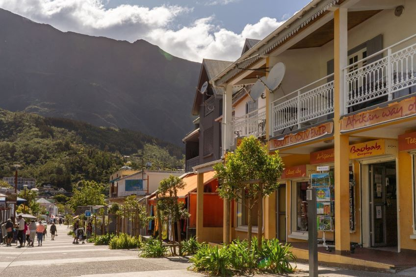
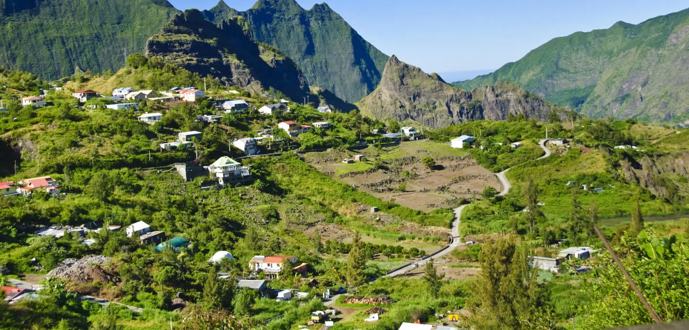
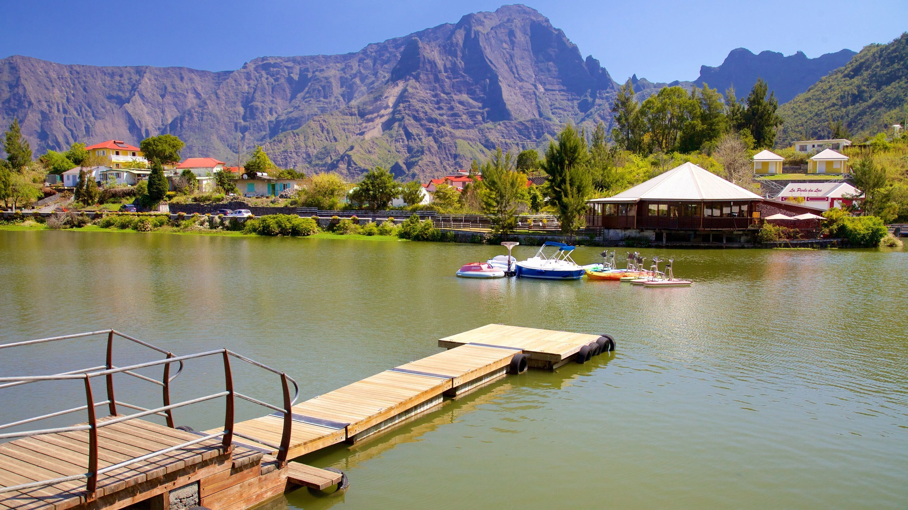

La perle des hauts de La Réunion, village thermal niché entre remparts et pitons.
Le Cirque de Cilaos est le seul des trois cirques de La Réunion accessible par la route. Une route mythique pourtant : plus de 400 virages en épingle à cheveux pour descendre (ou remonter) les remparts qui entourent le village de toutes parts.
Cilaos est connu pour ses sources thermales, ses vins de pays uniques en France d'outre-mer, sa dentelle artisanale et ses sentiers de randonnée parmi les plus beaux de l'île. Un art de vivre créole à 1 200 mètres d'altitude.
Classé au Patrimoine Mondial de l'UNESCO en 2010, dans le cadre des "Pitons, Cirques et Remparts de l'île de La Réunion", le cirque est protégé comme un trésor naturel d'exception.




Comme Mafate, Cilaos fut d'abord un refuge pour les esclaves marrons au XVIIIe siècle. Les remparts du cirque constituaient une barrière naturelle quasi infranchissable, offrant un sanctuaire loin des plantations.
Ce n'est qu'en 1819 que le premier Européen, le botaniste Bory de Saint-Vincent, pénètre officiellement dans le cirque. La route carrossable, elle, ne sera achevée qu'en 1932 — après des décennies de chantier titanesque dans la roche des remparts.
Aujourd'hui encore, cette route reste vulnérable aux éboulements et aux cyclones, rappelant à chaque habitant que Cilaos n'a pas renoncé à son caractère sauvage.
Cilaos est célèbre dans toute La Réunion pour ses sources thermales découvertes en 1815, ses vins de pays produits en altitude, et sa dentelle au crochet — un artisanat transmis de génération en génération.
Le village est aussi un point de départ idéal pour les randonneurs souhaitant gravir le Piton des Neiges (3 070 m, point culminant de l'océan Indien) ou traverser vers Mafate par le Col du Taïbit.
Son lac artificiel, ses marchés locaux et ses tables d'hôtes en font une destination touristique incontournable de l'île intense.
"Pour entrer à Cilaos, il faut accepter de tourner en rond — quatre cents fois — avant que la montagne vous laisse passer."— Dicton des chauffeurs de taxi réunionnais
Les seules sources thermales de La Réunion. Eaux bicarbonatées sodiques, connues depuis 1815. L'établissement thermal propose bains et soins.
Uniques en France d'outre-mer. Vignes cultivées en terrasses entre 800 et 1 200 m d'altitude. Le Pinot Noir et le Chenin blanc dominent la production.
Artisanat traditionnel transmis depuis le XIXe siècle. Les dentelières de Cilaos créent des pièces uniques reconnues dans toute l'île.
3 070 m — point culminant de l'océan Indien. Accessible depuis Cilaos en deux jours avec nuit au refuge. Vue extraordinaire au lever du soleil.
Cilaos est un point de départ privilégié pour certaines des plus belles randonnées de l'île. Ses sentiers relient le fond du cirque aux crêtes les plus hautes, en passant par des paysages spectaculaires.
Le terrain est exigeant : dénivelés importants, sentiers parfois étroits et météo variable. Une bonne préparation et un équipement adapté sont indispensables avant de partir.
2 jours • Niveau difficile • Nuit au refuge Caverne Dufour (2 479 m) • Point culminant de l'océan Indien
6h • Niveau sportif • Traversée mythique entre Cilaos et le Cirque de Mafate par le col à 1 875 m
3h • Niveau modéré • Panoramas sur le cirque et les remparts, végétation de haute altitude
2h • Niveau facile • Descente vers la rivière des Galets. Idéal pour les familles et les débutants
Le cirque génère son propre microclimat. Brouillard fréquent le matin, après-midis souvent dégagés. Toujours emporter un imperméable.
Hôtels, gîtes ruraux et tables d'hôtes nombreux dans le bourg. Refuge de Caverne Dufour pour les nuits en altitude. Réservation conseillée en saison.
Route des 400 virages (D241) depuis Saint-Louis ou Entre-Deux. Compter 1h30 depuis Saint-Denis. Route parfois fermée après de fortes pluies.